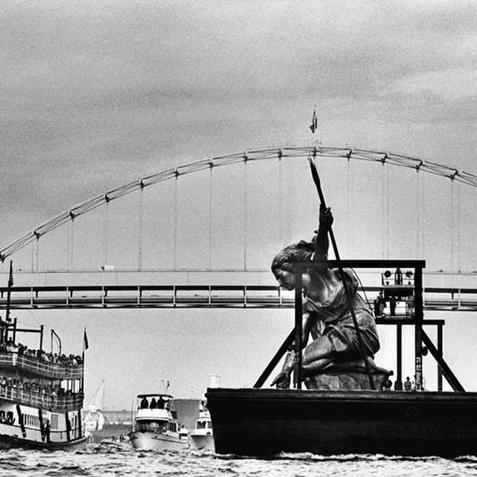

Downtown Tours
This walking only tour provides a glimpse into the natural, architectural, and cultural history of downtown Portland.

Growth Tours
This tour offers an insightful experience, by our very educated tour guides, about the history of Portland's growth.

Landmark Tours
This tour covers all of Portland's famous landmarks and must see spots.